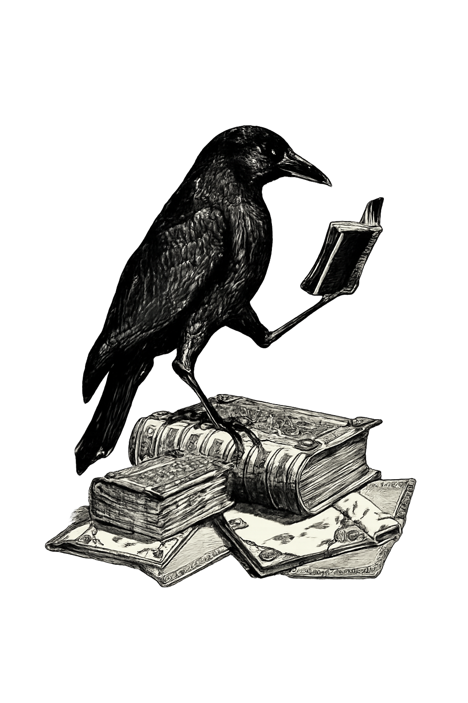

Mário Quintana
Caio Fernando Abreu
Mário Quintana
Caio Fernando Abreu
palavras que habitam o tempo

poetas conhecidos
Aqui você encontra poemas de poetas conhecidos, nomes que marcaram a história da literatura e que, com suas palavras, atravessaram gerações até chegar até você.
São versos que já foram lidos, sentidos e repetidos por muita gente, e que continuam vivos a cada nova leitura, revelando algo diferente para quem os encontra agora.
Mário Quintana
Caio Fernando Abreu